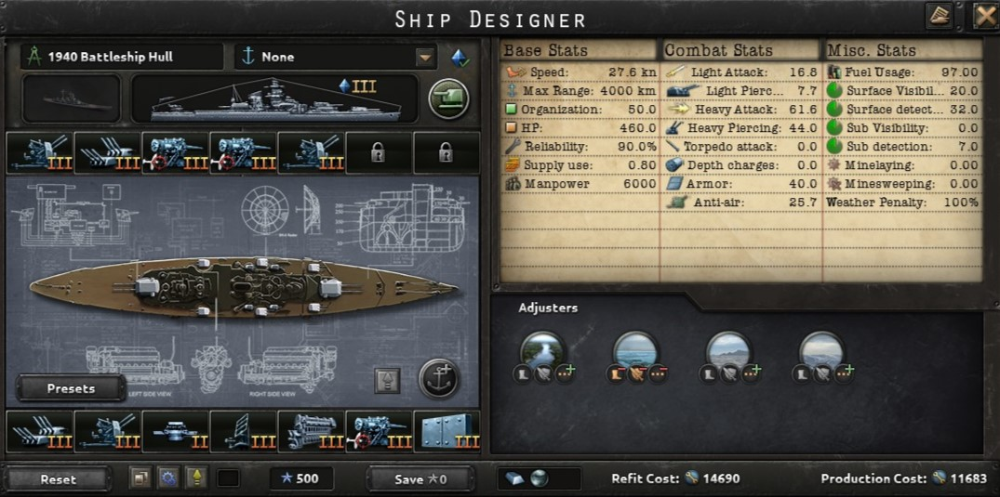
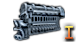

Battleship
Heavy Engine
A engine that is used to power large ships like Battleships and Battlecruisers.
- Heavy Engine I:
- +20% max speed
- 20 fuel usage
- Heavy Engine II:
- +35% max speed
- 25 fuel usage
- Heavy Engine III:
- +45% max speed
- 30 fuel usage
- Heavy Engine IV:
- +55% max speed
- 35 fuel usage
Heavy Armor

Armor used on battleships.
- Battleship Armor I:
- +5% hp
- 30 armor
- -10% Incoming Torpedo Critical Chance
- +10% Torpedo Damage Reduction
- Battleship Armor II:
- -5% max speed
- +10% hp
- 36 armor
- -15% Incoming Torpedo Critical Chance
- +15% Torpedo Damage Reduction
- Battleship Armor III:
- -10% max speed
- +15% hp
- 40 armor
- -20% Incoming Torpedo Critical Chance
- +20% Torpedo Damage Reduction
Battlecruiser Armor

Armor used on battlecruisers.
- Battlecruiser Armor I:
- +5% max speed
- +5% hp
- 22 armor
- +10% Torpedo Damage Reduction
- -0.32 supply use
- Battlecruiser Armor II:
- +10% hp
- 28 armor
- -10% Incoming Torpedo Critical Chance
- +15% Torpedo Damage Reduction
- -0.32 supply use
- Battlecruiser Armor III:
- -10% max speed
- 15% hp
- 34 armor
- -15% Incoming Torpedo Critical Chance
- +20% Torpedo Damage Reduction
- -0.32 supply use
Superheavy Armor

Armor used on the largest and heaviest battleships.
- -12% max speed
- 10% hp
- 55 armor
- -25% Incoming Torpedo Critical Chance
- +25% Torpedo Damage Reduction
Heavy Battery

Large navy cannons put on heavy ships.
- Heavy Battery I
- 14 heavy attack
- 31 heavy piercing
- -5% max speed
- Heavy Battery II
- 18 heavy attack
- 36 heavy piercing
- -6% max speed
- Heavy Battery III
- 22 heavy attack
- 40 heavy piercing
- -7% max speed
- Heavy Battery IV
- 26 heavy attack
- 45 heavy piercing
- -8% max speed
Superheavy Battery
Large navy cannons put on the heaviest ships.
- 27 heavy attack
- 45 heavy piercing
- -8% max speed
Secondary Battery

A navy cannon put on cruisers and larger ships for tasks the main batterys aren't suited for.
- Secondary battery I
- 3 light attack
- 5.5 light piercing
- -2% max speed
- Secondary battery II
- 4 light attack
- 7 light piercing
- -3% max speed
Dual Purpose Secondary Battery

A navy cannon put on cruisers and larger ships for tasks the main batterys aren't suited for. Also can be used in a anti-air role.
- Dual-prupose secondary battery I
- 2 light attack
- 3 light piercing
- 1 anti-air
- -1% max speed
- Dual-prupose secondary battery II
- 3 light attack
- 4 light piercing
- 2 anti-air
- -1% max speed
- Dual-prupose secondary battery III
- 4 light attack
- 7 light piercing
- 2.5 anti-air
- -3% max speed
- Dual-prupose secondary battery IV
- 4.5 light attack
- 7 light piercing
- 3 anti-air
- -3% max speed
Anti-Air

Anti-Air guns meant to protect the ship from aircraft.
- Anti-Air I:
- 2.5 anti-air
- -0.5% max speed
- Anti-Air II:
- 3.5 anti-air
- -0.5% max speed
- Anti-Air III:
- 4.5 anti-air
- -0.5% max speed
- Anti-Air IV:
- 5.5 anti-air
- -0.5% max speed
Radar

Electronics used to detect objects from a long distance.
- Radar I
- 5 surface detection
- Radar II
- 7 surface detection
- 2 sub detection
- +2.5% light battery hit chance
- +2.5% heavy battery hit chance
- +5% anti-air
- Radar III
- 12 surface detection
- 6 sub detection
- +5% light battery hit chance
- +5% heavy battery hit chance
- +7.5% anti-air
- Radar IV
- 18 surface detection
- 14 sub detection
- +10% light battery hit chance
- +10% heavy battery hit chance
- +10% anti-air
Fire Control
Electronics meants to help ships fire more accurately.
- Fire control 0
- +2.5% light battery hit chance
- +2.5% heavy battery hit chance
- Fire cotnrol I
- +5% light battery hit chance
- +5% heavy battery hit chance
- +10% anti-air
- Fire cotnrol II
- +7.5% light battery hit chance
- +7.5% heavy battery hit chance
- +15% anti-air
- Fire cotnrol III
- +10% light battery hit chance
- +10% heavy battery hit chance
- +20% anti-air
Floatplane Catapult

Catapult meant to shoot floatplanes into the air.
- Floatplane Catapult
- 7 Surface Detection
- 2.5 Sub Detection
- -1% max speed
- Improved Floatplane Catapult
- 10 Surface Detection
- 3.5 Sub Detection
- -1% max speed